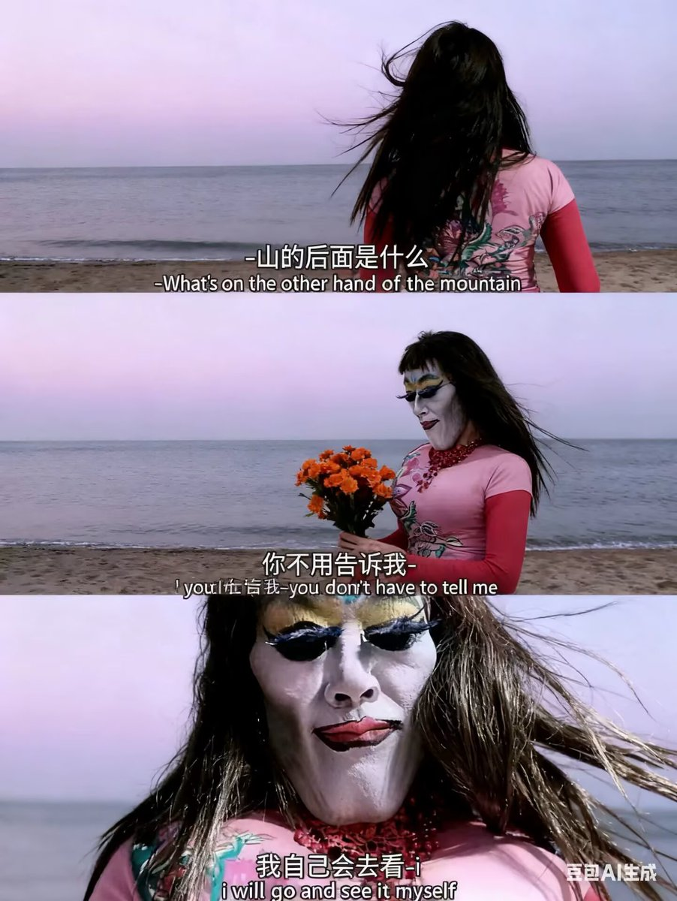

生成一张三格漫画，画面上方三分之一处的左半部分是第一格，右半部分是第二格，画面下方占总画面三分之二的位置是第三格。要求人物长相服装与参考图完全一致。第一格为人物的面部特写，眼睛睁大，眼神中带着一丝惊讶，嘴巴被一只手轻轻捂住，旁边配有一个 “！” 的符号，整体神态呈现出意外、略带羞怯的感觉，动作上是单手掩口，姿态显得较为娇俏。第二格也是人物的面部特写，眼睛眯起，呈现出笑意，嘴巴微张，那只捂住嘴的手还保持着动作，同时有 “噗～” 的拟声词，神态是开心、俏皮的，仿佛是忍不住要笑出声，动作上延续了掩口的姿态，却多了几分活泼的情绪。第三格背景是有云朵的天空，画面只出现了人物的上半身，人物画风与参考图完全一致。人物的发丝被风吹起，眼睛弯弯，面带柔和的笑容，脸颊还有淡淡的红晕。她姿态放松，身体略向前倾，双手背在身后，整体神态是自信且温柔，呈现出一种大方又迷人的状态。第三格左边有圆形对话框，写着“你觉得我漂亮”。右侧下方有圆形对话框，写着“那是因为你已经爱上我了，笨蛋”
